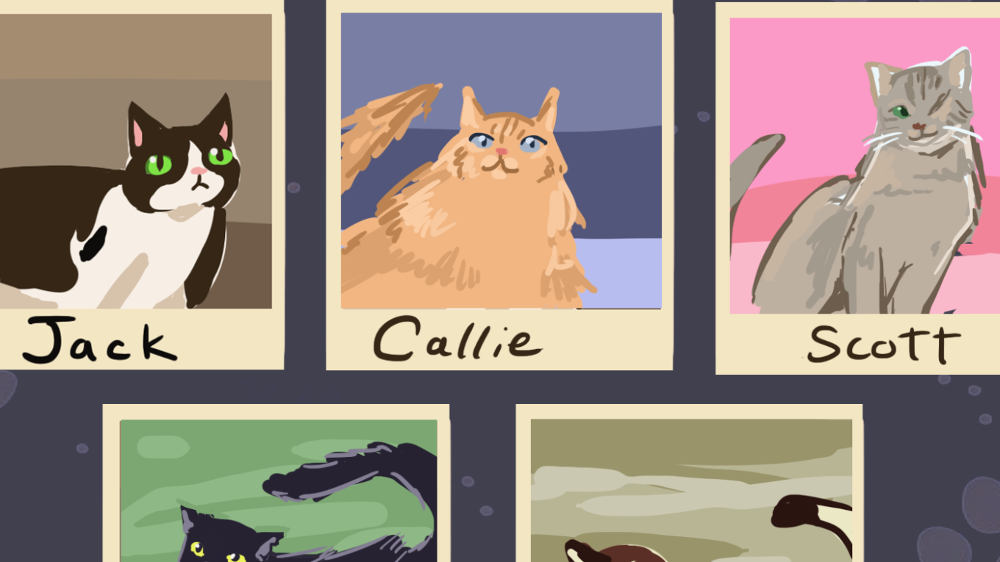

Ahma's Stray search
Ahma's Stray search explores illustrated characters and visual storytelling. This space will introduce the project, its world, and the ideas behind its characters.
More details about the development process, my contributions, and what I learned will go here. The video above and image below are placeholders for the project showcase.
